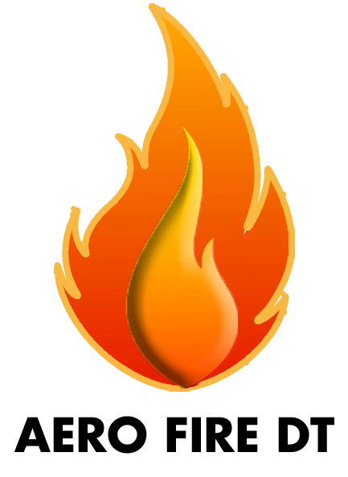

Les étapes 1 à 4 se font dans chaque boîtier (puce ESP32). Le vote et l'écran sont sur la passerelle locale (Raspberry Pi). Tout marche sans Internet.
Chaque boîtier (kit option 1) contient 4 capteurs du commerce et donne 11 mesures toutes les 10 secondes, en 3 familles :
capteur Sensirion SPS30
capteurs SGP30, ZE07-CO, SCD40
capteur SCD40
| # | Mesure | Ce qu'elle voit | Exemple |
|---|---|---|---|
| 1 | PM0.5 (très fines particules) | la fumée fine d'une combustion | un feu de bois en fait beaucoup |
| 2 | PM1.0 (fines particules) | fumée et brouillards fins | monte avec le feu et les sprays |
| 3 | PM2.5 (particules moyennes) | poussières, gouttelettes | monte fort avec la poussière de découpe |
| 4 | PM total | la quantité totale de « fumée » | c'est ce que voit un détecteur classique |
| 5 | Taille typique des particules | grains fins ou gros ? | feu = fins · poussière = gros |
| 6 | CO (monoxyde de carbone) | la combustion | feu, mais aussi chariot thermique |
| 7 | H₂ (hydrogène) | les feux qui couvent | monte tôt, avant les flammes |
| 8 | COV (vapeurs chimiques) | sprays, solvants, plastique qui brûle | un déodorant le fait exploser |
| 9 | CO₂ | combustion, moteurs, personnes | monte avec le feu et l'échappement |
| 10 | Température | la chaleur | un vrai feu chauffe, un spray non |
| 11 | Humidité | le contexte (vapeur, météo) | aide à ne pas confondre avec de la vapeur |
Chaque usine a son air habituel (un peu de poussière, un peu de CO des chariots…). Le boîtier ne regarde donc pas les valeurs brutes, mais ce qui monte par rapport à la normale :
À partir des hausses, le boîtier calcule 19 indices (toujours avec des mesures passées ou présentes, jamais futures : ils peuvent tourner en direct). Ils répondent à 4 questions simples :
| Question | Indices | Exemple |
|---|---|---|
| 1 · De combien ça monte ? (6 indices) | hausse du CO, H₂, COV, CO₂, température, humidité | CO +10 ppm et température +3 °C → ça sent la combustion |
| 2 · Combien de fumée, et quelle taille ? (5 indices) | hausse de la fumée totale, des particules très fines et moyennes, part des grosses particules, taille typique | beaucoup de grosses particules, pas de gaz → poussière |
| 3 · À quelle vitesse ça monte ? (6 indices) | pente sur 60 s du CO, H₂, COV, fumée, température, CO₂ | un feu grandit ; un spray retombe vite |
| 4 · Quel mélange ? (2 indices) | gaz par rapport à la fumée · vapeurs (COV) par rapport à la fumée | beaucoup de COV pour peu de fumée → spray |
Un détecteur classique ne voit que la ligne « fumée ». Avec les 11 mesures, chaque situation a sa propre empreinte :
| Situation | Fumée | Taille | CO | H₂ | COV | Chaleur | Ce que l'IA conclut |
|---|---|---|---|---|---|---|---|
| Feu de bois | ▲ | fine | ▲ | ▲ | ▲ | ▲ | tout monte ensemble → feu |
| Spray | ▲ | grosse | — | — | ▲▲ | — | beaucoup de vapeurs, pas de chaleur → nuisance |
| Poussière | ▲▲ | grosse | — | — | — | — | seulement des grains → nuisance |
| Échappement | petit | — | ▲▲ | ▲ | — | — | pas un feu, mais CO dangereux signalé |
Nom technique : HistGradientBoostingClassifier (bibliothèque scikit-learn), avec 300 arbres. En simple : 300 petits arbres de décision qui travaillent en équipe.
Un arbre de décision est une suite de questions oui / non, comme un questionnaire de médecin :
Pourquoi 300 arbres ? Un arbre seul se trompe souvent. Alors le 1er arbre donne une réponse, le 2e apprend à corriger ses erreurs, le 3e corrige celles qui restent… jusqu'à 300. On additionne leurs réponses : c'est le score final. C'est le principe du « boosting ».
| Pourquoi ce modèle | Explication |
|---|---|
| Apprend bien avec peu d'essais | on dispose de 32 essais réels : un gros réseau de neurones aurait besoin de beaucoup plus |
| Rapide et léger | environ 2 ms par calcul ; il tient dans la petite puce du boîtier |
| Explicable | on voit quels indices ont pesé (onglet « POURQUOI » de l'application) |
| Pas de caméra, pas de YOLO | nos données sont des mesures de capteurs, pas des images |
Ce qu'il a appris de plus important (dans l'ordre) : la hausse des vapeurs (COV), les vapeurs par rapport à la fumée, la hausse du CO, puis la taille des particules, la chaleur et l'hydrogène. C'est ce qu'un expert du feu dirait aussi.
Le score IA est un avis. Pour dire « FEU », une règle physique simple, inspirée de la double boucle des moteurs d'avion, vérifie que deux signes différents sont d'accord :
| Canal | Question | Feu | Spray | Poussière |
|---|---|---|---|---|
| A · Fumée | les particules montent fortement ? | ✔ | ✔ | ✔ |
| B · Gaz | le CO, l'H₂ ou les COV montent ? | ✔ | ✔ | — |
| C · Chaleur | la température monte de plus de 1,5 °C ? | ✔ | — | — |
La passerelle prend les 3 boîtiers les plus actifs, fait la moyenne de leurs scores et la lisse dans le temps. Puis :
| Verdict | Condition |
|---|---|
| FEU COUVANT POSSIBLE | score ≥ 0,70 et fumée ou gaz encore en hausse, pendant 30 s → « envoyer un agent vérifier » |
| FEU | score ≥ 0,70 et canal A + (canal B ou C), pendant 30 s → verrouillé jusqu'à confirmation humaine |
| NUISANCE | score ≤ 0,30 pendant 30 s |
| Jeu de données | Contenu | Usage |
|---|---|---|
| Mendeley « Industrial Hall » Allemagne, licence CC BY 4.0 | 9 boîtiers, 77 h, 32 essais réels : 17 feux (bois, bougies, câbles, mèches) et 15 fausses alarmes (déodorant, échappement, machine à fumée, CO, éthanol, soudure, découpe, déchets verts) + environ 50 h d'activité normale | entraînement et test |
| Salle d'essai EN 54 Mendeley, CC BY 4.0 | une autre salle, jamais vue par le modèle : feux et fausses alarmes | test sur un autre site |
| NIST FR 4019 États-Unis, domaine public | une maison d'essai : vrais feux et fausses alarmes de cuisine | test de l'apprentissage local |
Le piège, c'est de tester une IA sur des données qu'elle a déjà vues. Nous avons fait « un essai caché à la fois » : on cache un essai, on entraîne sur les 31 autres, on teste sur l'essai caché, et on recommence pour les 32. Chaque essai est donc jugé par une IA qui ne l'a jamais vu.
Chaque usine a son air normal et ses fausses alarmes habituelles. Les réponses du gardien deviennent de nouvelles étiquettes, et un modèle local est entraîné pour cette usine seulement. Ce qui est appris dans l'usine X ne change rien dans l'usine Y.
Un second modèle prévoit où sera la fumée dans 30 à 60 secondes : hauteur de la couche de fumée, température, temps avant que l'air devienne dangereux. C'est un petit réseau de neurones (64 × 64) entraîné sur 5 000 feux simulés par un modèle physique de zones (même famille que l'outil CFAST du NIST). Dans le jumeau numérique 3D, la simulation des flux d'air (CFD) montre la fumée en direct et la prévision à +60 s.
| Point | Ce que ça veut dire |
|---|---|
| Dans le boîtier | les indices et le score tournent sur la puce ESP32 (environ 2 ms) |
| Hors ligne | aucune donnée ne part sur Internet ; tout tourne sur place |
| Sur batterie | le système continue pendant les coupures STEG |
| Sécurité | lecture seule ; l'IA assiste, l'humain décide (niveau 1 de l'EASA, méthode transposée) ; l'alarme certifiée reste maître |
| Reproductible | code, données et tests sur GitHub : python scripts/run_all.py refait tout |